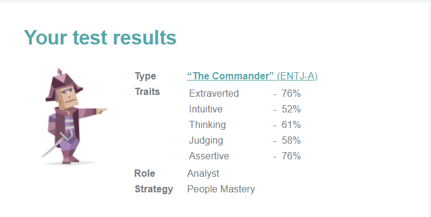
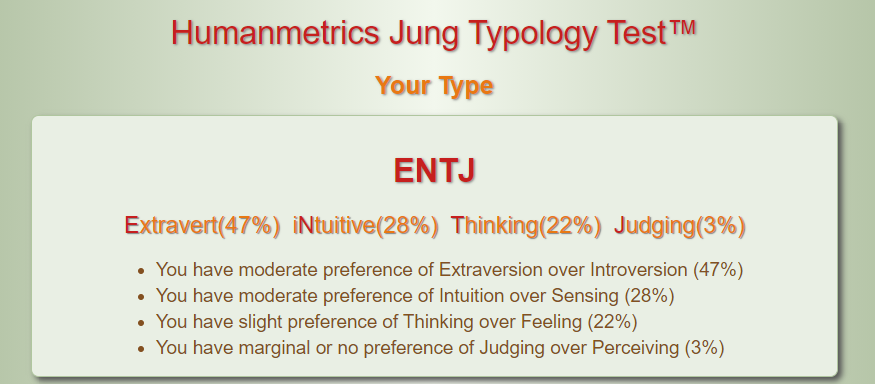

Hello
I am Hien Nguyen
This is my website for my Assignment 2 in Intro to IT Course. This website will display several practical IT Topics as well as share some IT knowledges.
Image from Freepik
This is my website for my Assignment 2 in Intro to IT Course. This website will display several practical IT Topics as well as share some IT knowledges.
Image from Freepik
I have taken three tests that reveal three different aspects about myself. These tests include: a Myers – Briggs test which discovers the way that I perceive the world and make decisions, a learning style test which indicates the way that I prefer to study and last but not least a 16personalities.com’s test which sheds some light on my personality. Below are the results of my 3 tests:
 Both my ‘ENTJ’ result for the Myer-Briggs test and ‘The Commander’ result for the 16personalities’s test indicate that I am a protagonist/leader kind of person. I found that these results are somewhat accurate since I usually want to take responsibility as the leader of the group/team that I’m in. I am confident that I can motivate other members with my energy so that we work better as a group.
The best locally for IT solutions, installations, consultancy & support
We blend creative and strategic thinking to solve problems, grounding everything in robust, logical, fact-based insights.
A good team will consist of members who can express their ideas confidently. Based on my learning style test result, I am an auditory learner so I would want my teammates to speak to me a lot.
We align leaders and mobilize teams by activating and igniting actions around the Quest. We move thoughtfully and with intent through project workstreams while working to....
Image from Freepik
I would also want my teammates to have knowledge in different fields that I have. For example, I am interested in Cyber Security and have a fair amount of knowledge that is related to this field. It would be best that my teammates are into different fields such as Artificial Intelligence or Hardware since we can learn much more from each other and produce a more refined project.
Last but not least, my ‘dream team’ would be composed of responsible teammates who get the group’s work done on time and with consistent quality.
From the start of its existence, property security is a job that requires a lot of man-power. As a security guard for a company or organization, the basic responsibilities include protecting the company/organization’s assets and maintaining a safe and secure environment by observing for signs of crime or disorder and eliminating them. Normally, this will be done with multiple monitor cameras and a team of security officers using them to detect suspicious actions.
However, one person can only cover so many cameras without making any mistakes that can end up risking the whole company/organization’s safety. My project idea is to improve the security system by equipping the security cameras with a small single-board computer system that can analyse the video data from the camera using AI and machine learning to detect suspicious actions. Raspberry Pi, a leading company in producing microcomputers, have recently dropped their newest products: Raspberry Pi 4 Model B and I think this is the right machine for my project.
Large companies spent a significant proportion of their budget towards security and protection. ‘Recent research reports provide some context in terms of how much organizations are spending on security. CIO’s 2019 State of the CIO survey conducted in November 2018 asked 683 executives worldwide what percentage of their company’s total budget was represented by security. The mean response was 15%.’ (Violino 2019, para.4).
Most of these money are for paying the wage of security guards as well as maintaining the security system’s hardware. Surveys have found out that most security guards are comfortable with monitoring 16 cameras. (Umbot 2019, para.6). However, with the help of AI, I hope that this number can reach 30 – 40 cameras/per guard since the machine will be doing most of the detecting jobs and put less pressure on the security guards. This also means that the number of security guards can be cut by half and save the company’s money as a result.
According to wikipedia: ‘The term microcomputer came into popular use after the introduction of the minicomputer, although Isaac Asimov used the term in his short story "The Dying Night'' as early as 1956 (published in The Magazine of Fantasy and Science Fiction in July that year). Most notably, the microcomputer replaced the many separate components that made up the minicomputer's CPU with one integrated microprocessor chip.’ (Wikipedia 2020, para.2). This means that microcomputers can be made much smaller compared to conventional ones and therefore can be used for a wider range of purposes. Initially, micro-computers are not designed to be used with AI, machine learning or any heavy tasks since they just simply do not have the amount of processing power that is needed. However, that concept was changed with the release of the Raspberry Pi 4 Model B in late 2019. It sports a faster 1.5GHz clock speed processor (up from the older 1.4Ghz found on its predecessor Raspberry Pi 3). The RAM storage is where we see a big upgrade since now we have the options to get the 1GB, 2GB or 4GB (of DDR4 RAM) version compared to the limitation of 1GB (of DDR2 RAM) on the Raspberry Pi 3. 1GB of RAM is often enough when it comes to working with small electronics and engineering projects, however, our projects include working with AI and machine learning so I decided to choose the maximum option with 4GB of DDR4 RAM which cost 55$ (on ebay.com). I will pair this with a Kingston 120GB HDD for storage.
Each Raspberry Pi 4 will be fed with the video data from only one monitor camera. This data will then be processed by an AI system which has been trained by machine learning to detect suspicious activities. For the machine learning module, I will be using Google’s TensorFlow. ‘TensorFlow is a free and open-source software library for machine learning. It can be used across a range of tasks but has a particular focus on training and inference of deep neural networks. Tensorflow is a symbolic math library based on dataflow and differentiable programming’ (Wikipedia 2020, para.1). It is used for a wide range of deep learning tasks, including video/image recognition which is the feature that I want to use in my project. I will further explain the term ‘deep neural networks’ in order to justify my choice for TensorFlow since it is ‘focus on training and inference of deep neural networks’. The subfield of machine learning which does work with algorithms inspired by the structure and function of the brain is called deep learning. (Brownlee 2019, para.1). The reason that I chose deep learning over other kinds of machine learning is because as we construct larger neural networks and train them with more data, we will consistently get increase in performance. This is different to other machine learning formats that reach a plateau/peak in performance (Brownlee 2019, para.10). This means that I can always put in more work and if I’m on the correct path, I will still be getting an increase in precision and performance in the long term.

Afterall, we are still working with a low-specced machine and
the Raspberry Pi 4’s 1.5GHz quad core Cortex-A72 isn’t capable of heavy deep
learning tasks. There are 2 stages to machine learning in general and deep
learning in specific: the first stage is called training and this is when the
machine learns to do the tasks, the second one is inference and it is when we use
the trained model to perform the task. The Pi’s processor clearly is nowhere
near suitable for training the program in my project, this part will be done
with another computer system with high-end CPU and GPU. However, it is capable
of doing inference which is why I will be using it to analyse the videos from
the monitoring cameras.
From my
research about the Raspberry Pi 4 raw performance and the way TensorFlow works,
I can confidently comes up with a prediction that the Pi’s estimated
performance while working with a well-trained model is around 2 – 4 inferences per second and this result is achieved by already pushing the
Pi’s quad core processor to it’s limit. This result is far slower compared to
real-time and will not be beneficial when it comes to practical usage. However,
I have also found a solution to this problem. Intel's Movidius Compute Stick can
increase the Pi’s performance significantly when it comes to vision-related
tasks which is what I am doing in my project. The USB stick which uses a
12-core Myriad 2 Vision Processing Unit is capable of 100 gigaflops, consumes a
single watts of power usage and costs a mere 79$. With this USB, the system
will be able to produce around 20
inferences per second which is a
significant upgrade compared to our 2 – 4 inferences per second with just the
Pi itself.
Since I already have experience with Node.js and Javascripts,
it will be most reasonable for me to develop the models and programs for my
projects based on this 2 fundamental tools. I will also be using Python along
the way.
- JavaScript: JavaScript,
often abbreviated as JS, is a programming language that conforms to the
ECMAScript specification. JavaScript is high-level, often just-in-time
compiled, and multi-paradigm.
- Node.js: Node.js is an open-source, cross-platform, back-end,
JavaScript runtime environment that executes JavaScript code outside a web
browser.
- Git: Git is a distributed version-control system for tracking
changes in any set of files, originally designed for coordinating work among
programmers cooperating on source code during software development.
- Visual Studio: Microsoft Visual Studio is an integrated
development environment from Microsoft. It is used to develop computer
programs, as well as websites, web apps, web services and mobile apps.
- Python: Python is an interpreted, high-level and
general-purpose programming language. Python's design philosophy emphasizes
code readability with its notable use of significant whitespace.
- Rasberry Pi 4: the newest model of the Rasberry Pi series.
- TensorFlow: TensorFlow is a free
and open-source software library for machine learning. It can be used across a
range of tasks but has a particular focus on training and inference of deep
neural networks.
-
Intel's
Movidius Compute Stick: an USB stick that can be used to increase
computer’s vision-related tasks performance.
Below are some of the skills that is required for this
project:
- Basic understanding about machine
learning, how to train models in machine learning, etc. as well as the workflow
in TensorFlow
- Creating a program as a back-end platform
using JavaScript and Node.js
- Debug skills: With a project related to
machine learning in general and deep learning in specific, debugging and
troubleshooting skills are very much needed since working with machine learning
is about trial and error and I need to be capable to locate and fix the bugs
that I encounter.
- Teamworking skills: With a project this
complicated, I do not expect to work alone so teamworking skill is a crucial
skill to have in order to get the product launch in time as well as maintaining
the consistency within the whole team’s workflow.
With soft skills such as team working and debug skill, I can
only expect to get better by practicing it. This means participating in many
other projects and always trying to perform your best while working among other
teammates. With hard skills like knowledge about machine learning and Python
coding, there are a lot of resources online that I can find and make use of. I
will list some of the resources down below:
-
Youtube.com:
You can expect to get a grasp of everything on youtube.
-
Udemy.com:
Udemy provides a lot of courses including machine learning as well as how to
create a fully functional Python app.
-
Google.com:
For any question that I am unsure about, the quickest way to get a relevant
answer is to Google it.
The outcome of my project will be a Raspberry Pi 4 that can receive video data from surveillance cameras and analyse the data with trained deep learning modules for the capabilities to detect suspicious activities such as someone is trying to pick a fight or a thieves is trying to break into the facility. In the past, detecting these suspicious activities were only done by the security guard. However, nowadays, with the help of AI and machine learning, I hope that the whole security system will be less dependent on man-power which has been proved to not be as consistent and precise as what machines are capable of.
What does it do?:
Even though computers history date back to the 1800s, it is
not until the 1930s that marked the beginning of calculating machines, which
were considered the first programmable computers. ‘Konrad Zuse created what became
known as the first programmable computer, the Z1, in
1936 in his parent's living room in Berlin. He assembled metal plates, pins,
and old film, creating a machine that could easily add and subtract. Although
his early models were destroyed in World War II, Zuse is credited with creating
the first digital computer.’ (Olito 2019, para.4). Since that moment, digitals
computers has been and are evolving at an incredible speed. According to Moore’s Law, the number of
transistors in a dense integrated circuits (IC) will double every 2 years.
Moore’s Law, rather than a law of physics, it is a prediction to the growth of
raw computational power that human can achieves over time. So far, his
prediction seems to be fairly accurate.
Not only growing in power, computers have significantly decreased in size over time. This makes it possible for them to make it out of giant rooms in university and government buildings and onto the market for public use. Nowadays, over 80 years after the creation of the first digital computer, normal consumers can purchase and make use of portable computers (laptops) with immense power at a fraction of the price compared to just 20 years ago. Apple Inc. had just dropped their newest laptop in November 2020 which was called ‘M1 Macbook’. This event marks the first time Apple uses their homemade ‘Apple Silicon chip’ on a Mac. This massive change was claimed to quadruple the Mac’s performance as well as double the machine’s efficiency. These mean that the new M1 Macbook owners can expect their laptop to have a huge leap in heavy task performances while doubling its battery life. This is an incredible jump in the technology industry in general and in the laptop evolution in specific and I believe that it will step up the competitions between other chip manufactures like Intel and AMD. The reason that Apple achieved such success with Apple Silicon is because they integrated all the basic components of the computer (CPU, GPU, RAM) into just one chip. This cut the communication steps that are normally needed between these components and through that enhances the overall performance as well as efficiency greatly. I am confident that we will have a revolution in the computer chip industry in the next few years.
What is the likely impact?:
The largest impact of Apple releasing such a revolutionary
piece of tech is that it will step
up the competition between big
chip producing companies like Intel, AMD and Qualcomm. The largest of them all,
Intel, had been using their market share as a leverage over other chip
processors. They have been sticking with their 14nm chip design’s architecture
for 5 consecutive years. The fact that Intel's brand name is so widely known is
saving their sales despite their chip’s inferior performance compared to their
direct opponent AMD. Let’s do a quick comparison between this year Intel’s 10th gen 14nm ‘Comet-Lake’ chip with
AMD’s Ryzen 5000 series chip. When we compare the productivity and content
creation performance between the 2 series of chips, the statistic does not lie.
Even the top of the line Intel’s Core i9-10900k which cost 500$ disappoint
consumers when it’s performance is 10% lower than the Ryzen 5 5600X which cost
a staggering 200$ less. According to Tom’s Hardware, a famous tech reviewing
site, ‘Intel's trouble moving forward to denser process
nodes has left it behind in the core count race, and now AMD has offerings on
both the HEDT and mainstream desktop that Intel simply can't match.’.
Most of the normal consumers do not acknowledge this issue and continue to
support Intel by purchasing their products.
However, with one of Intel’s biggest partners, Apple, turning away from them by using their own chipset and achieving great results, the monopolistic act that Intel have been doing for the past few years will hopefully be put to a stop. By releasing the M1 Macbook with cutting edge performance and efficiency, I believe that Apple Inc. have made a significant step in evolving the minicomputer industry or laptop as we know it today.
How will it affects you?:
Intel can just hold their monopoly in the chip industry for
so long and their act has slowed down the chip industry growth for the last few
years. Consumers are not getting the expected growth in performance from
Intel’s chip which accounts for almost 65% of the total market share. I, as a
consumer, am glad to see that Apple is making moves to break this monopoly and
through that speed up the chip evolution and give their customers better
products. As a person that will work in the IT industry, I believe that my
future working life depends heavily on the evolution of mini/portable computers
because after all, the default image of a coder sticks with a laptop/PC. At
present, the performance of laptops are nowhere near PCs and powerful laptops
normally trade-off their battery life. In the near future, I believe that us
coders/programmers will be made available with powerful laptops with great
battery life. I am confident with this prediction since the current M1 Macbook
possesses a whopping 20-hours battery life while still being a very powerful
laptop and my expectations are set to high when it comes to the release of the
M1 Macbook Pro in the year 2021.
I believe that humans have reached a point where as a species
we no longer just evolve based on the speed of nature, technology is now the
DNA of the modern world and us humans are evolving at the speed which
technologies are. The power is now in our hands.
What does it do?
Cyber Security is a term that is commonly confused with
Information Security. According to IT Governance, ‘Cyber Security focuses
on protecting computer systems from unauthorised access or being otherwise
damaged while Information Security is a broader term that looks to protect any
kind of information assets whether in hard or digital form’.
The history of Cyber Security began from the 1970s with a
research project named ‘The Advanced Research Projects Agency Network’
(ARPANET). A researcher named Bob Thomas created a computer program that moves
ARPANET’s network and leaves behind a trail whenever it goes. The program was
named ‘CREEPER’ since the message that it left behind when travelling
across networks was ‘I’M THE CREEPER: CATCH ME IF YOU CAN’. Later on, the
godfather of the internet, Ray Tomlinson, has upgraded CREEPER by giving it the
ability to automatically move and replicate itself, creating the first internet
virus. He also wrote another program called Reaper that chased the CREEPERs and
deleted them, providing the first antivirus software. (Murphey 2019, para.8)
Thomas and Tomlinson’s programs may have started as simple experiments with the
ARPANET’s network, however, it raised big concerns about big organizations’ and
governments’ network security and this is when Cyber Security started to exist
as a concept.
Forty years later into the future, Cyber Security has become
so complicated that most normal consumers often do not know the threats that
they are facing from the internet. Even experts are not aware and have the
solutions for all of the chaosness happening online. The last decade, 2010s,
was described in the Cyber Security world as ‘the era of major breaches’ with
hundreds of thousands of data breaches that cause billions of dollars in
damage. Among the worst are: the Yahoo massive breach in 2013 which hit every
existing Yahoo account with an estimate of around 3 billions accounts
affected, the First American Financial Corporation major breach in 2019
which exposed 885 millions bank account details, etc... New holes and security
anomalies kept getting capitalized and most of the time, attackers are one step
forward compared to the defenders.
A successful cyber-attack can be the doomsday for any
business, digital or not. Data breaches come with significant financial loss
(average cost for fixing the damage from a cyber attack as of 2019 was
3.92m $) as well as causing bad reputations for companies that got hit. One of
the technologies that got experts’ attention in the last few years was blockchain. Blockchain started out as the technology behind the widely known
cryptocurrency Bitcoin, however, it is growing to be a promising technology in
the Cyber Security field. Blockchain is a kind of database but the key
difference lies in the fact that it stores data in blocks that are chained
together. ‘Blockchain technology is a distributed and decentralised
ledger system that can record transactions (a form of data) between multiple
computers. Blockchain fully automates data storage hence reducing the human
element in these data storage systems.’ (Legrand 2020, para.12). Blockchain can be
utilized in many ways as well as in multiple fields and industries due to its
ability to provide certainty in the
integrity of transactions.
What is the likely impact?
Blockchain is not unbreakable, however, it has built the
reputation of ‘the most foolproof forms of transacting in the digital realm’.
Once a block of data is filled in the blockchain, it becomes a part of the
timeline and therefore immutable. Each block is given a timestamp which contains
the time which it was added to a chain. With the property of being reliable,
blockchain can be implemented into many uses.
One of the good applications of blockchain is to secure the
DNS (Domain Name System) and prevent DDoS (Distribution Denial of Service). A
DDoS happens when the attacker slows or shuts down a system by disrupting the
normal traffic of a targeted server. A normal way to create a DDoS would be to
flood the server with redundant signals from multiple compromised computer
systems. The DNS, on the other hand, is very centralised, making it a perfect
target for hackers and the result of these attacks can make websites
inaccessible, capitalizable and in some cases, even redirectable to other
websites. In this case, blockchain can be used as a tool to prevent these kinds
of attacks from happening by decentralising the DNS entries. By applying this solution,
vulnerable points that can be exploited by hackers will be removed by the use
of blockchain.
Nowadays, we are hearing about more data breaches and system
break-in than ever. The reason is because data is quickly becoming one of the
most valuable resources in the world. ‘The list of the top 10 companies by market
capitalization is now dominated by data-centric companies like Facebook,
Alphabet, Microsoft, Apple, and Amazon.’ (Callahan 2017, para.3). This makes
valuable and sensitive data a prime target for hackers. Not only big companies
are under threat of being targeted by cyber criminals, in fact, a large
percentage of data related attacks are small ones and targeted at individual
users. There are a few ways that blockchain can be used in storage distribution
software. One of the most common ways is to break the data into smaller chunks
and encrypt the data so that the only people that can access it are the one
that should be able to. After that, the files will be distributed across the
network in a way that the result is all the files will be available even when
part of the network is down. By this practice, instead of handing your files to
big cloud operators like Amazon or Facebook’s cloud storage, you distribute it
across a network all over the world. In this network, no one can read or write
over anyone else’s data and you have full control over your data. There are a
few benefits that blockchain storage has over normal cloud storage. First, peer
to peer network (the same technique as torrenting) can make download speed
really fast and by using blockchain, the user is guaranteed no other user can
have any access to his/her data. The data is also distributed all over the
world, so whenever the user needs access to his/her data, it is available.
No matter what the application is, it is based on the key
feature of blockchain: decentralization. This feature removes the single target
point that can be compromised. As a result, it becomes utterly impossible to infiltrate
systems or sites whose access control, data storage, and network traffic are no
longer in a single location. (Legrand 2020, para.28). Nevertheless, I believe
that blockchain will be useful when it comes to dealing with cyber threats in
the coming years.
How will this affect you?
Most of the problems solvable by using blockchain are on the
enterprise level so I don’t see many direct applications for myself. Afterall,
blockchain is a type of database so can a normal user use it for normal
database purposes? Definitely, however, blockchain coding is much more
complicated compared to other types of databases like SQL or NoSQL so there is
no point choosing blockchain over them.
After considerations, I choose to view, summarise and discuss 10 Youtube videos or other web sources to report on 5 different IT professionals.
Software Engineer:
Sources: https://www.youtube.com/watch?v=mU556a-1Vy8 (Youtube Video)
https://www.fullstackacademy.com/blog/what-do-software-engineers-do#:~:text=Software%20engineers%20are%20computer%20science,and%20run%20network%20control%20systems.
(Article)
The software engineering field is a big one and different
software engineers have different sets of skills, from working with backend
databases systems to creating frontend web-apps to maintaining network security.
So what does software engineers actually do? The simple
answer for that is: they code and make softwares by coding. However, the actual
process is much more complicated than that. First software engineers get their
software’s basic idea from the manager and gather the requirements that are
needed to produce that software. After this first step, they should have the
full view about how the software should look like and run in their head. Then
comes the designing phase where the engineers have to logically design every
step for every feature in the software, this step will support them a lot when
it actually comes to the coding phase. With all the designs finished, now
engineers can start working on their main task, code the program.
Fullstack softwares is often created by teams, not
individuals. This means that software engineers normally work in teams and
cooperate with each other to finish their tasks. As a result, they need to
interact with each other and spend most of their working time doing that in a
separate development section of the company. There are a lot of things to be
discussed while creating a software. For example, the front end engineers need
to communicate and make sure that backend engineers know what they want them to
do or how they want the APIs to be set up. Apart from other engineers, software
engineers also have to work with data science professionals, system architects,
development teams, etc... in bigger projects.
A software is a complicated piece of art and to refine it,
engineers have to put in a lot of time and effort. Software bugs can appear for
a lot of different reasons. Finding and fixing all of the bugs in the program
is one of the most challenging part of being a software engineer.
Data Scientist:
Source: https://www.youtube.com/watch?v=XWetgrNas-k (Youtube video)
https://www.northeastern.edu/graduate/blog/what-does-a-data-scientist-do/#:~:text=By%20extrapolating%20and%20sharing%20these,help%20organizations%20make%20objective%20decisions (Article)
For many years, becoming a data scientist had been a
desirable career path. According to Northeastern, ‘For
five years in a row, Glassdoor ranked data scientists as one of the 10
best jobs in America, based on median base salary, the
number of active job openings, and employee satisfaction rates.’ By
combining different skills like computer science, statistics, analytics and
math skills, data scientists can find the answer to major questions and through
that help their organization make decisions.
A data scientist job can be broken down to several phases.
The first phase is Project Planning, this phase is rather self explanatory,
scientists will plan, gather information and prepare resources for the project.
The next step is called Data Manipulation, Cleaning, Collecting and Querying. I
will need another report just to fully explain what data scientists do during
this phase. However, in short, they are manipulating the data and getting them
ready for the Analysis phase. Finally, the Analysis phase is where the data
scientist closely investigates the characteristics of the data looking for
trends and use machine learning models that can help them answer the questions
that they are paid to figure out.
Data scientists normally work with departments that need big
data analysis for making decisions like the sale and marketing department. They
also work with other engineers and scientists in the company. Therefore, a
typical data scientist will spend most of their time at the company working
with other co-workers.
Just like every other IT related occupation, there are a
variety of challenges that a data scientist might face while working. One
of the most common challenges is with data preparation. Data scientists
normally spend up to 80% of their time cleaning and preparing data to improve
its quality. This process will make the data accurate and consistent which
utilizes it for analysis. However, it is easy to make mistakes while going
through terabytes of data everyday and the scientist's job is to provide the most
accurate data possible. Another problem that data scientists might face is with
understanding the business problem. This is a really important step since
scientists have to thoroughly understand the problems that the business is
having in order to find answers on how to fix it.
Cyber Security Engineer:
Source: https://hbu.edu/science-and-engineering/degree-programs/ug-major-cyber-engineering-bs/what-does-a-cyber-security-engineer-do/#:~:text=Cyber%20security%20engineers%2C%20Cybrary%20says,implementation%20of%20secure%20network%20solutions (Article)
https://www.youtube.com/watch?v=t7alwWiUb50 (Youtube video)
The demand for cyber security jobs is rising over the years
while supply is running critically low. According to the New York times, there
will be 3.5 millions unfilled cyber security jobs by the end of 2021. In fact,
cyber security engineer are among the hottest and most well paid careers in the
IT field.
The job of a cyber security engineer is to identify threats
and vulnerable points within the system and software, they also need to have
the skills needed to defend against malware, ransomware and other kinds of
cyber crime. Another challenging job that cyber security engineers need to do
is planning, building and maintaining a security system that can protect the
organization data and other online assets.
The nature of cyber security engineers means that they will
have to work in almost every position in the IT department of the company, this
may include software engineers, system analysts, etc...
Computer Network Architech:
Source:
https://www.careerexplorer.com/careers/computer-network-architect/ (Article)
https://www.yourfreecareertest.com/computer-network-architect/ (Article)
Communication and network systems in big organizations can
get really complicated and there is a dedicated position just to create and
handle it: computer network architects.
Computer network architects gather information about their
organization’s business plan and through that build communication networks that
can help the organization reach its goal. Computer network architects also take care of
upgrading software network drivers and hardware, such as adapters or routers. They also advise the organization
on the best way that communication systems can be setup to benefit the
organization as a whole.
In order to do their job, computer network architects need to
have an excellent understanding about their organization's business plan so
they can design the suitable kind of networks and communication systems.
Normally, they will closely work with the Chief Information Officer (CIO) to
make predictions about the locations where the organization will most likely
need networks. Computer network architects also have to work with security
engineers to ensure that they are not creating any holes that attackers can
exploit while setting up the system.
IT Director:
Source:
https://www.zdnet.com/article/what-is-an-it-director-everything-you-need-to-know-about-one-of-the-top-jobs-in-tech/ (Article)
https://www.youtube.com/watch?v=JhRlTZg14iQ (Youtube video)
Every department has its own manager and for the IT
department, the position is IT Director. Each IT Director has their own way of
managing his/her team and often play a major role in how businesses make the
most out of technology.
The job of IT Director is to ensure that the company is
running smoothly and effectively on a technology basis. However, this job can
vary widely depending on the company that the director is working in. No one is
hired as the IT Director from the start, an employee has to perform
consistently and gain reputation in order to get promoted to be an IT director.
As a director, he/she also has to meet up with managers from other departments
to discuss technology related issues within the company.
An IT Director usually needs to have a really strong
technical background since he/she needs to be the person that best understands
the project on a wide scale. He/she is also required to have knowledge and
skills from the business field such as budget control, business analysis, team
leadership, etc...
It is never easy when you are the executive of a department
and have to take most of the responsibilities for every action from that
department. IT Directors should be able to perform well even under great stress
and motivates other employees to strive for the department’s goal.
What is Git and
GitHub? Why do we use it?
Git is an
open-source version-control system that manages local and remote repositories
by keeping track of files. For example, when a person uses Git to push a file
to a repository, Git will verify the existence of that file in that repository
before allowing you to push it up . GitHub is a well-known website that hosts
Git remote repository, it is a online database where you can keep your Git
repositories. Since GitHub makes it easier for Git users to work together, we
can say that Git promotes collaboration among members within a group.
Git’s instruction
for installing:
1. Downloading
Git on your local machine / Signing up for a GitHub account.
The first step for
an user in order for he/she to use Git is to download Git. Users can download
Git by clicking this link: https://git-scm.com/
2. Check
to see if Git is successfully and properly installed
After
installation, user can use the PC’s command prompt or other IDE’s Terminals to
check if Git is successfully installed by typing ‘git’:
If this is the
feedback from the terminal that you get, it means that Git is successfully
installed. This means you can
start doing work with Git.
3. Setting
up GitHub username and email on Git.
Before using Git, the
user should to register GitHub account by visiting official website. After that
you should set up your Git credential in you IDE
4. Creating
a local repository from scratch.
User can create a
new repo (repository) in their PC by using the command ‘git init’:
The system will
then create a local repo and show the repo address to the user.
5. Copying
an online repository onto a local machine
To do this, Git
has a command ‘git clone <repo
url>’ to create a clone version of the remote repo on the local machine:

The repo folder
will appear on the chosen destination that is the position where you are
writting the git command.
6. Uploading
local files on the remote repository.
To place local
files on the online repository, users should type the following commands in
orders:
- Git add
<filepattern> (Git add will add one or multiple files depending on what is typed
in the <filepattern> to the
index before being committed.) or git add . (‘.’ means to choose all files
in the local repo).
- Git commit –m “What did
you do?” (Git
commit will save the changes made to the local repository after being added
to the index . Comments will be typed after –m, this helps other people having access to your repo understand
what you did).
- Git push (This command will push the files to the online repository).
7. Creating
a branch.
When a repo is
created, it will have main branch as a default branch, users can create another
branch separated from the main branch, this can be done locally on Git or
remotely on GitHub:
i. Local
To do this
locally, users can use ‘git branch
<branchname>’ command, this will create a new branch on the local
repo as follows:
This means the
local repo has branch1 as another branch apart from main.
To update branch1
to the remote repo, users can use ‘git
push origin –u <branch>’ command after ‘git add’, ‘git commit’ .
The result should
be similar to the image content. Branch branch1 is now available on the remote
repo, along with its files, etc.
ii. Remote
Users can use
create a branch on GitHub as an alternative by clicking the branch name, users
can either switch branch or create a new branch by entering branch name in the
textbox, then an option will appear:
If you type a
branch name in there, you will create a new branch
8. Resolving
merge conflicts
On a share remote
repo, it usuallly occurs that one user attempts to push their files to the
repo’s main branch, but the files with the same name are already on the remote
repo’s main branch, created by another user. There are 2 ways that we can
resolve this issue:
i. Git
pull (Locally)Git pull is a command that
retrieves all the latest updates from the remote repo, using Git pull in this case will show the
conflicts the files’ content. Then, users can either keep the local content or
choose the remote content instead. Only after this stage is done can Git push command be executed
successfully. If any conflict
occurs, the terminal will notify and prevent users from using git push.
After git pull command is typed, there will
be two versions of the file available: local and remote. Users must choose one
of them only in order to successfully execute the git push command. The chosen version will replace the previous
remote version on the remote repo.
ii Pull
request (Remotely) If users work
directly on GitHub, they may encounter merge conflicts when they try to merge
other branches into the main branch. For example, they have another branch with
a file in it, and they want to merge into the main branch, but there is also a
version of that file in the main branch, this means merge conflicts will occur.
Github will not be
able to merge the 2 branches since there is a conflict so the user will have to
manually merge the 2 branch by resolving the conflicts. They can choose which
version of the file to keep and merge into the main branch.
If you want to
know more about Git commands, you can refer to this link: https://backlog.com/git-tutorial/
created with
Website Builder Software .